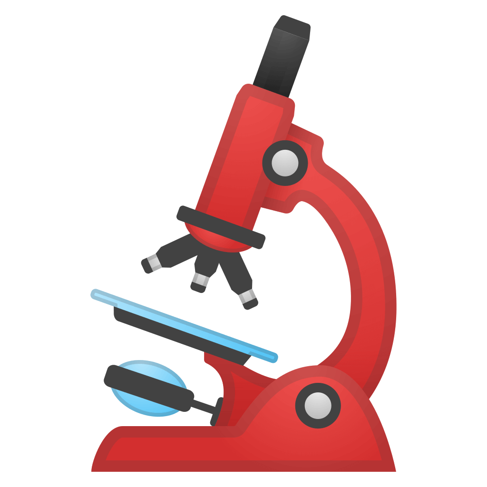

الأجر و التواب
االتبرع بالدم, يساهم في إنقاذ حياة شخص, قال تعالى (وَمَنْ أَحْيَاهَا فَكَأَنَّمَا أَحْيَا
النَّاسَ جَمِيعاً)

الأسبقية إحتياج الدم
يتمتع المتبرعون بصفة دورية على الأسبقية للحصول على على الدم في حالة الإحتياج

تحاليل حيوية مجانية
يمثل التبرع بالدم فرصة للاطمئنان الدوري بخصوص الإصابة ببعض الأمراض الخطيرة التي تنتقل بالدم
مثل فيروسات الإيدز.. الخ